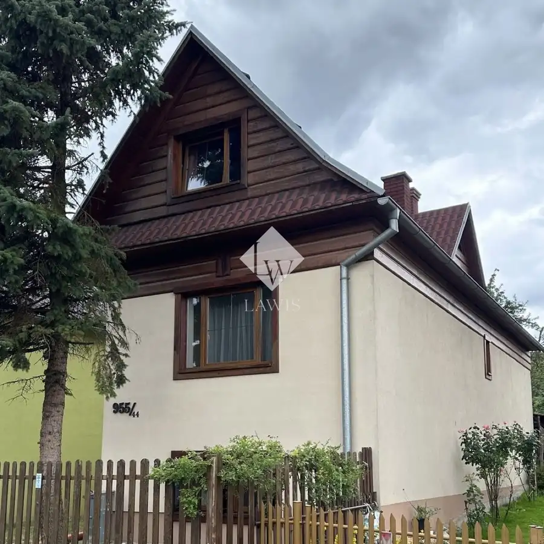
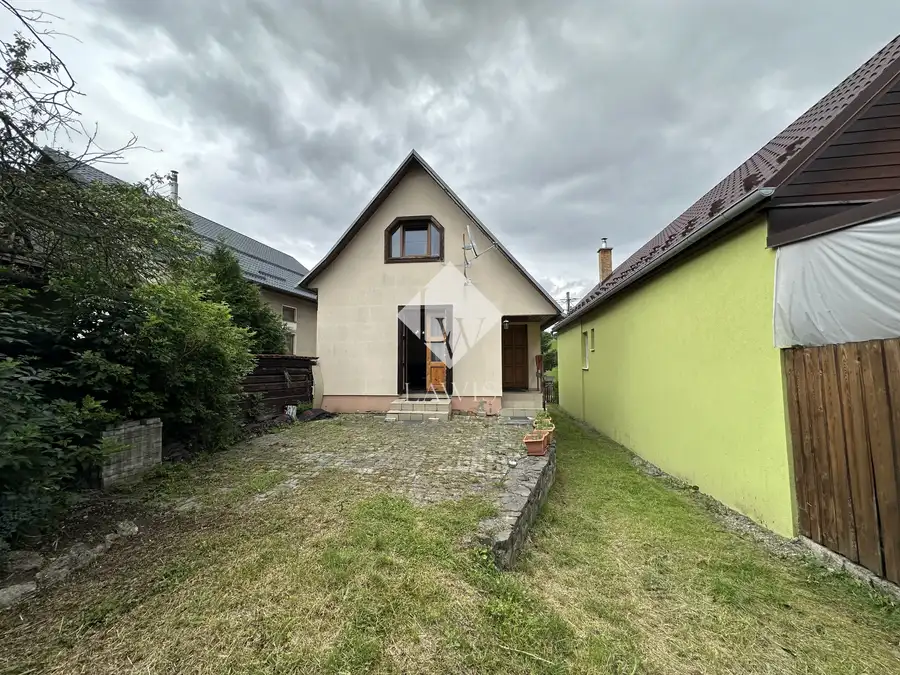
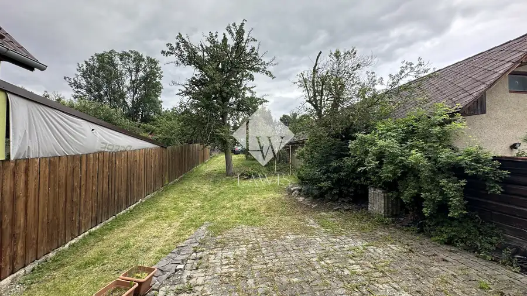
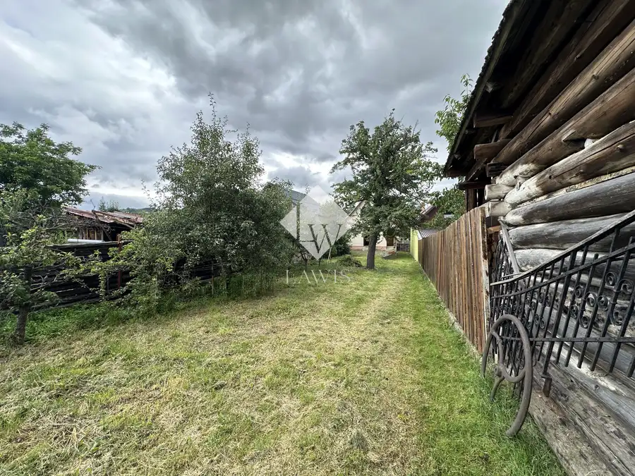
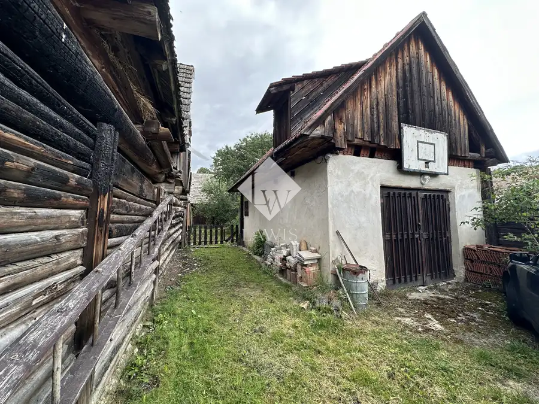
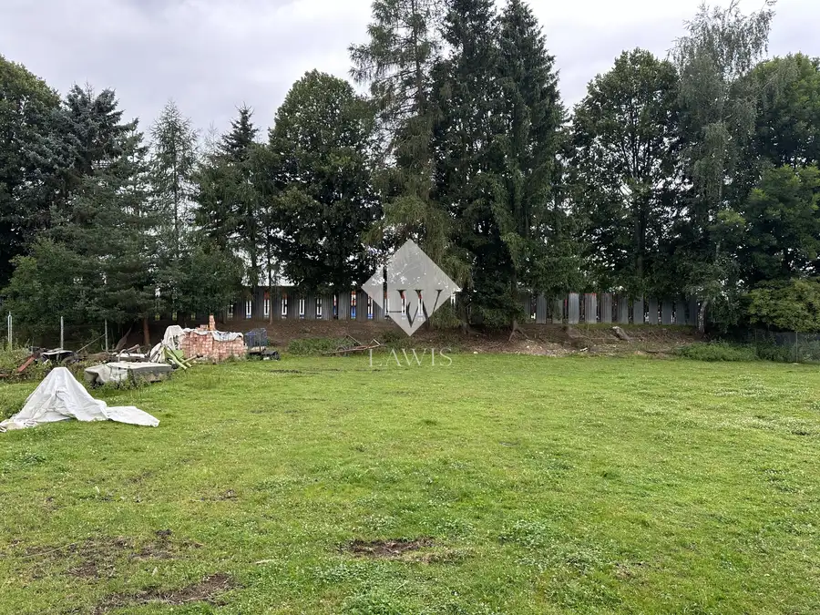
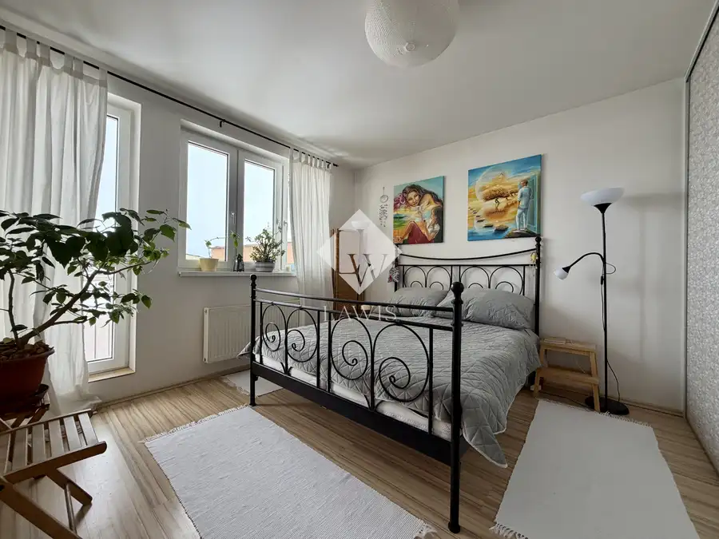
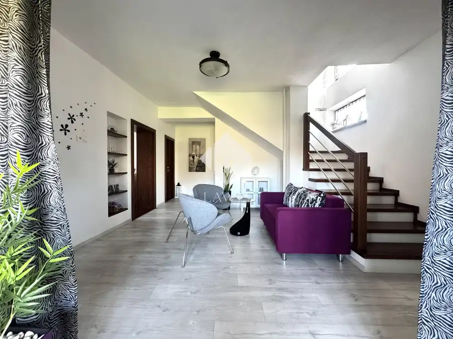
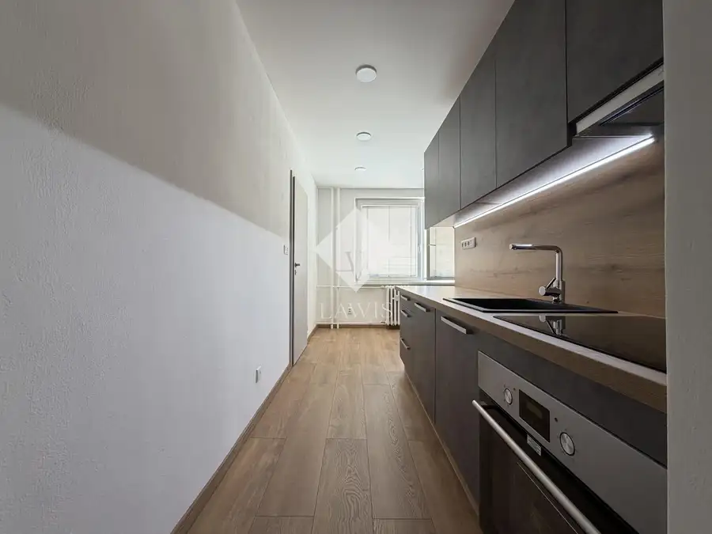

Rodinný dom s veľkým pozemkom v srdci Liptova
Liptovské Sliače






- Plocha140 m²
- StavČiastočná rekonštrukcia
- VlastníctvoOsobné
O nehnuteľnosti
LAWIS Realitná kancelária ponúka na predaj 5-izbový rodinný dom, na pozemku s celkovou výmerou 1011m2, v obci Liptovské Sliače. DISPOZÍCIA: Na prízemí sa nachádza zádverie, priestranná obývacia izba spojená s kuchyňou a špajzou, samostatná spálňa. V podkroví sú 2 nepriechodné izby a kúpeľňa s WC. Na oknách sú externé žalúzie. Dom je z 1/3 podpivničený. V suteréne sa nachádza technická miestnosť s kuchynkou a toaletou. Dom je napojený na elektrickú sieť, plyn, vodovod a kanalizáciu. Kúrenie zabezpečuje plynový kotol s podlahovým kúrením.Plocha pozemku je 1011 m2, podlahová plocha domu je 139,77 m2.Na pozemku sa ďalej nachádza murovaná garáž a pôvodná hospodárska budova využívana na uskladnenie dreva.LOKALITA:Rodinný dom sa nachádza vo vyhľadávanej lokalite v príjemnom prostredí v srdci Liptova v obci Liptovské Sliače s neďalekým prístupom na diaľnicu D1. Okolie obce ponúka bohaté turistické vyžitie (Prosiecka, Kvačianska či demäňovská dolina, Jasná Nízke Tatry, vodná nádrž Liptovská Mara, aquaparky Bešeňová a Tatralandia, múzeá, Likavský hrad atď. ). Ružomberok je od obce vzdialený 10 km a Liptovský Mikuláš 25 km. V obci je kompletná občianska vybavenosť. VÝHODY:pokojná lokalita v srdci Liptovausprostred prírodypivnicakompletná občianska vybavenosťkultúrne a turistické vyžitiemožnosť dorobiť podľa Vašich predstáv.---ID: 1149----V prípade záujmu o bližšie informácie nás neváhajte kontaktovať na tel.č. +421 949 003 003 alebo mailom na vagner@lawis.sk.---Realitná kancelária LAWIS je členom Realitnej únie Slovenskej republiky a riadi sa jej Realitným kódexom.
Parametre
- Druh
- Rodinný dom
- Dátum zverejnenia
- 04. 10. 2024
- Plocha pozemku
- 151 m²
- Počet izieb / miestností
- 5
- Stav nehnuteľnosti
- Čiastočná rekonštrukcia
- Typ
- Predaj
- Typ konštrukcie
- Tehlová
- Vlastníctvo
- Osobné
- Vybavenie
- Pivnica
- Zastavaná plocha
- 80 m²
- Úžitková plocha
- 140 m²
Kde to je


Mohlo by Vás zaujímať

BytNové 285 000 €Mestský mezonet v centre Popradu s modernou dispozíciou Poprad 3-izbový88 m²
DomNové 299 900 €Priestranný rodinný dom s veľkým pozemkom a garážou Nesluša 361.4 m²
BytNové 179 900 €Veľkorysý 3-izbový byt 82 m2| Šatník | Rekonštrukcia Martin 3-izbový82 m²2. podlažie